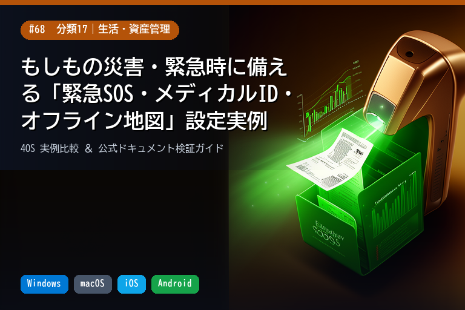

#68｜分類17: 生活・行政手続き・家計・資産管理 2026-11-24

もしもの災害・緊急時に備える「緊急SOS・メディカルID・オフライン地図」設定実例｜Windows・macOS・iOS・Android
地震や豪雨などの自然災害、あるいは予期せぬ事故。いざという時、スマートフォンの通信が途絶したり、バッテリーが切れたりする場面は想定しておくべきリスクです。
「ネットが繋がらなくなったら道に迷うのではないか？」「意識を失った時、自分の持病やアレルギーを誰かに伝えられるだろうか？」
こうした不安を解消するためには、クラウドへの依存を減らし、デバイスの標準機能（ローカライズされた設定）を活用して「オフラインで動く救命セットアップ」を構築しておくことが極めて重要です。この記事では、主要な4つのOS（Windows, macOS, iOS, Android）ごとに、緊急SOS・メディカルID・オフライン地図の具体的な設定手順を徹底解説します。
4OS比較早見表
| 機能 | Windows 11 | macOS | iOS (iPhone/iPad) | Android |
|---|---|---|---|---|
| 緊急SOS | 非対応（代替手段あり） | 非対応（代替手段あり） | 標準搭載（ボタン長押し） | 標準搭載（機種依存あり） |
| メディカルID | 手動メモ/OneNote推奨 | ヘルスケアアプリ連携 | 標準搭載（緊急表示カード） | 標準搭載（緊急情報） |
| オフライン地図 | Microsoft Maps（限定的） | Apple マップ（限定的） | 標準搭載（エリア保存） | Google マップ（高精度） |
| 主な用途 | データ保全・書類管理 | 家族連携・バックアップ | 個人救命・緊急通報 | 高精度ナビ・広域対応 |
1. Windows 11 での実例手順
PCは「移動手段」ではなく、災害時の「情報拠点（データ保全）」としての備えが中心となります。
標準機能での実例手順
- 緊急SOS/メディカルID: Windows自体にはiPhoneのようなワンタップSOSや専用の「メディカルID」機能は非対応です。
- 代替手段: 「メモ帳」または「OneNote」に家族連絡先、血液型、既往歴を記述し、デスクトップ等に常駐させるか、オフラインでも閲覧可能なフォルダに保存します。
- オフライン地図: Microsoft Storeから「Maps for Windows 11（Microsoft マップ）」を導入後、設定画面より「ダウンロードしたエリアでマップを表示」というオプションを選択して事前ダウンロードを行います。
- 公式手順: スタートメニュー > 「Microsoft マップ」> メニュー右上の三点リーダー > 「オフライン地図を管理」。
- 重要書類保存: Windows標準アプリ「フォト」または「スナップショット」でハザードマップや保険証、領収書（電子帳簿保存法対応データ含む）を撮影・保存します。
標準機能の制限事項
- OS内蔵SOS: Windowsには緊急通報ボタンが存在しないため、PC単体での救命手段としては不向きです。
- 地図精度と更新頻度: Microsoft MapsのオフラインデータはGoogleマップに比べて詳細さが劣る場合があり、災害時のルート案内機能も簡易的であることが多い点に注意が必要です。
よくあるトラブルと解決法
- 【エラー】「Maps for Windows」アプリが起動しない/更新できない
- 原因: Microsoft Storeのキャッシュ不具合またはネットワーク制限。
- 解決: 「設定 > アプリ > インストールされたアプリ」から再インストール、あるいはPCを再起動して再度ストアを開く。
- 【失敗】オフライン地図のダウンロードが完了しない（「後で試してください」と表示）
- 原因: 通信回線の不安定さまたはデータ容量不足。
- 解決: Wi-Fiに接続し直してから、より狭い範囲（例：自宅周辺のみ）を選択して再度ダウンロードを試す。
- 【失敗】スナップショットで撮影した画像が保存場所が見つからない
- 原因: デフォルトの「写真」フォルダへの自動同期設定ミス。
- 解決: 「フォトアプリ > 設定 > アルバムをクラウドにアップロードする」を確認し、必要に応じて手動コピー（Ctrl+C/V）でOneDriveフォルダへ移動させる。
2. macOS での実例手順
Macはモバイル端末との連携や、情報のバックアップ拠点として活用します。
標準機能での実例手順
- 緊急SOS/メディカルID: 「ヘルスケア」アプリ > 「健康データ共有」設定から、医療機関や家族にアクセス権を付与。ただし、「Emergency SOS」という物理ボタン操作はiPhoneと連携してのみ動作するため、Mac単体では非対応です。
- 代替手段: メモ帳または「テキスト」アプリで緊急連絡先リストを作成し、タイムマシンバックアップ対象外として外部ドライブに保存します。
- オフライン地図: Apple マップ（Maps）アプリ > 「メニューバーの三本線アイコン」> 「ダウンロードしたエリアを表示」。ただし、Appleは完全なナビゲーション用オフラインマップを積極的に提供していないため、詳細さが限定的であることが多いです。
- 公式手順: Apple メニュー > 設定 > プライバシーとセキュリティ（一部バージョン依存）またはアプリ内メニューから特定の地域を選択してダウンロードする。
- 重要書類保存: 「プレビュー」または「写真」アプリでハザードマップをスキャン・編集。「ショートカット」アプリを用いて、撮影した画像の自動整理ルールを設定可能です。
標準機能の制限事項
- OS内蔵SOS: Macのキーボードやトラックパッドには物理的な緊急ボタンが存在しないため、Mac単体での発信は不可能（Bluetoothヘッドセット経由のみ）。
- オフラインマップの限界: Apple マップのオフラインデータ更新頻度が低く、災害直後の道路状況反映が遅れるリスクがあります。
よくあるトラブルと解決法
- 【エラー】Apple マップで「この地域は現在利用できません」と表示される
- 原因: Appleのサーバー側でのデータ提供制限またはネットワーク接続の不安定さ。
- 解決: 「Google Chrome」などのブラウザからGoogleマップへ切り替えるか、iOS版マップアプリ（iPhone/iPad）でダウンロードし、Macに共有する。
- 【失敗】ヘルスケアデータの共有設定が反映されない
- 原因: Apple IDの認証エラーまたは「健康データ共有」の許可忘れ。
- 解決: 「システム環境設定 > プライバシーとセキュリティ（または App フォールトトレランス）」から関連アプリの権限を確認し、再度ペアリングをやり直す。
- 【失敗】スキャンした書類がiCloud ドキュメントに保存されない
- 原因: iCloud Driveの同期オフライン設定ミス。
- 解決: 「システム環境設定 > Apple ID > iCloud」で「ドキュメント」という項目のオン/オフを確認し、手動でファイルを移動させる。
3. iOS（iPhone / iPad）での実例手順
iOSは最も強力な「救命デバイス」として機能します。標準機能をフル活用しましょう。
標準機能での実例手順
- 緊急SOS: 「ヘルスケア」アプリを開き、「健康データ共有」タブから家族や医療機関への連絡先を設定。「サイドボタン（電源ボタン）を長押しして画面を揺らすか、3回連続で押す」という動作により、自動的に指定された人に通知が送られます。
- メディカルID: 「ヘルスケア」アプリ > メイン画面の「緊急表示カード」> 「編集」。血液型、アレルギー、主治医情報を登録。「サイドボタン長押し（または電源ボタン）」でロック解除せずに即座に表示可能になる設定にします。
- オフライン地図: Apple マップ アプリを開き、「メニューバーの三本線アイコン」（iPad）または「検索結果右上」> 「ダウンロードしたエリアを表示」。自宅周辺を詳細に保存します。
標準機能の制限事項
- PC連携なしでの編集困難性: iPadOSでもiPhoneでも、ヘルスケアアプリの設定はApple IDでログインしている必要があるが、オフライン状態でも設定変更自体は可能（ただし通信復旧後同期）。
- 地図データの完全非対応エリア: 海沿いや山間部など、Appleがデータ提供していない地域ではオフロードマップが表示されない。
よくあるトラブルと解決法
- 【失敗】緊急表示カードがロック画面で開かない
- 原因: 「サイドボタン長押し」の閾値設定ミスまたはハードウェア故障の可能性。
- 解決: 「ヘルスケア > 健康データ共有」から「緊急表示カードをオン」を確認し、再起動を試す。それでもダメな場合はAppleサポートへ連絡（※物理的な電源ボタンの反応確認も必要）。
- 【エラー】オフライン地図のダウンロードが途中で止まる
- 原因: 通信回線の不安定さまたはデータ容量不足。
- 解決: Wi-Fiに接続し直してから、より狭い範囲（例：自宅周辺のみ）を選択して再度ダウンロードを試す。
- 【失敗】ヘルスケアアプリが起動しない/エラー画面が出る
- 原因: アプリのキャッシュ不具合またはOSのアップデートによる互換性問題。
- 解決: 「設定 > 一般 > iPhoneを再起動」で一旦終了させるか、App Storeから「更新」ボタンを押し直す。
4. Android での実例手順
AndroidはGoogleマップの強力なオフライン機能と、メーカー独自のSOS機能を組み合わせるのが基本です。
標準機能での実例手順（Pixel / Galaxy など共通）
- 緊急SOS: 「ヘルスケアアプリ」（Samsungは「Galaxy Health」、Google Pixelは「健康」または端末固有のメニュー）を開き、「緊急表示カード」を設定。サイドボタン長押しでロック解除せずに即座に表示可能になる設定にする。（※機種により名称が異なる場合あり：Pixelは「Emergency info」、Galaxyは「SOS 機能」。）
- メディカルID: 「ヘルスケアアプリ」> メイン画面の「緊急表示カード」> 「編集」。血液型、アレルギー、主治医情報を登録。
- オフライン地図: Google マップ アプリを開き、「検索結果右上」または「メニュー（三本線）」> 「ダウンロードしたエリアを表示」。自宅周辺を詳細に保存する。（※Android標準機能として最も確実な方法）。
標準機能の制限事項
- メーカーごとの差異: Samsung Galaxyの場合は「Samsung Health」、Google Pixelや他のAndroidでは「健康」アプリまたは端末固有の設定画面を使用するため、メニュー階層が異なる。
- 緊急SOSの動作条件: 一部の廉価モデルでは、「サイドボタン長押し」という物理操作ではなく、特定のキーボードショートカット（PC）や別のジェスチャーが必要になる場合があるため、購入前に「緊急情報」の設定項目を確認することをお勧めします。
よくあるトラブルと解決法
| エラー・事象 | 原因の可能性 | 対処法 |
|---|---|---|
| オフライン地図が反映されない | ダウンロード範囲の選択ミス、または通信切断状態での操作 | Wi-Fi環境下で「自宅周辺」を再ダウンロードし、機内モードで正しく表示されるか確認する。 |
| メディカルIDが表示されない | 「緊急表示カード」のスイッチがOFF | ヘルスケアアプリの設定画面から、ロック画面での表示許可を再度ONにする。 |
| 地図データが古い/正確でない | 災害直後の道路状況更新の遅れ | Googleマップ等の公式アプリを用い、可能な限り最新の「オフラインエリア」を再取得する。 |
まとめ：快適なマルチOS環境を作るポイント
災害や緊急事態への備えは、「標準機能の把握」から始まります。しかし、デジタルでの備えをより強固にするためには、ハードウェアと周辺ツールの活用も欠かせません。
例えば、行政手続き（e-Taxなど）や資産管理をスムーズに行うためのICカードリーダーを導入しておくことで、緊急時でも正確な本人確認書類の管理が可能になります。また、会計ソフトや家計管理アプリと連携するモバイルスキャナーを常備しておけば、ハザードマップや保険証などの重要書類を即座に高精細データとして保存でき、クラウドだけでなくローカルストレージへのバックアップも容易になります。
OSごとの特性を理解し、適切なツールを組み合わせることで、いかなる事態にも動じない「デジタル救命セットアップ」を完成させましょう。
参考文献・公式ドキュメント（一次情報ソース）
本記事の手順・仕様は以下の各OSおよびツールの公式ドキュメントに基づいています。OSアップデートによりメニュー名称や挙動が変わる場合があるため、最新仕様の確認にもご活用ください。
- [日本公式（税務）] 電子帳簿保存法関係（領収書・電子取引データの保存要件） - 国税庁
- [Windows] Windows で PC をバックアップおよび復元する - Microsoft サポート
- [macOS / iOS] iPhoneやiPadで書類をスキャンする方法 - Apple サポート (日本)
- [Android] Google ドライブでドキュメントをスキャンする - Google ドライブ ヘルプ